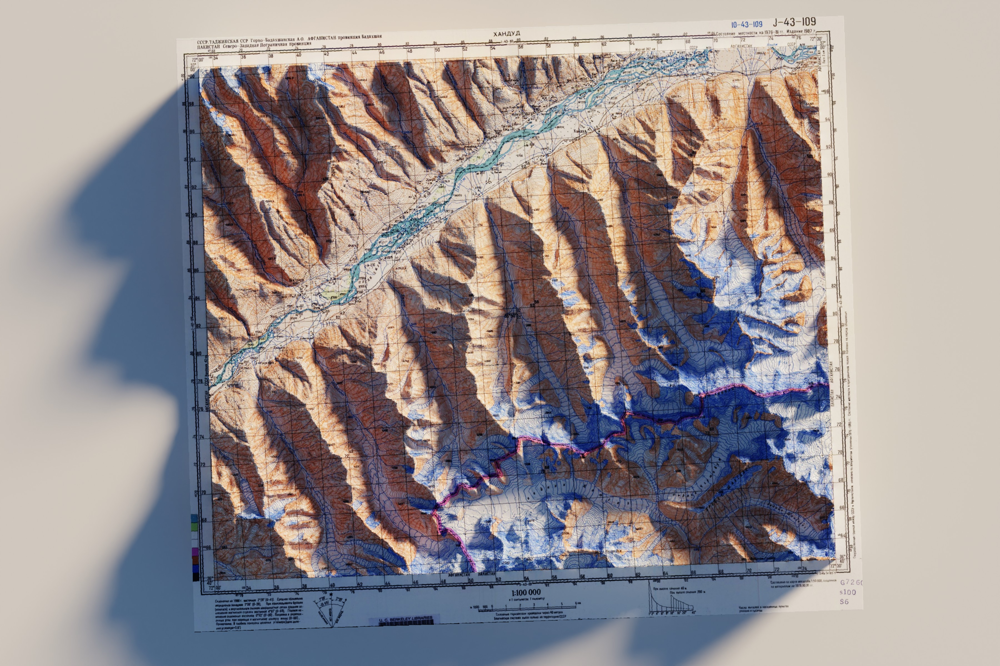

Detecting Conflict Disturbance to Agricultural Productivity: The Case of the Panjshir Valley, Afghanistan
Armed conflict poses a significant threat to food security, and the Panjshir Valley of northeastern Afghanistan offers a compelling case study. The region's dependence on subsistence agriculture means that conflict-driven displacement and land abandonment have an outsized impact on local food production. Despite broad consensus that armed conflict degrades food security, the precise mechanics of this relationship remain poorly understood.
This research quantifies the impact of armed conflict on agricultural productivity during the Soviet occupation of Afghanistan (1980–1989), a period that saw nine major military offensives in the Panjshir Valley. Using Landsat 5 (1984–2012), I compare trends in the Normalised Difference Vegetation Index (NDVI) between agricultural plots in high-conflict and no-conflict landscapes with similar altitudinal gradients. Agricultural plots are delineated from HEXAGON KH-9 declassified spy imagery, and conflict intensity is assigned using explosive ordnance disposal (EOD) data from The HALO Trust. Non-parametric trend tests on seasonal maximum NDVI, together with spectral curve analysis, are used to identify degraded or unharvested agricultural areas.
The findings provide a deeper understanding of how past conflict has driven food insecurity in the region, and lay the groundwork for predicting how ongoing and future conflict may continue to affect agricultural productivity. Presented as a full oral talk at the Global Land Programme 5th Open Science Meeting, Oaxaca, Mexico, November 2024. View the abstract.
